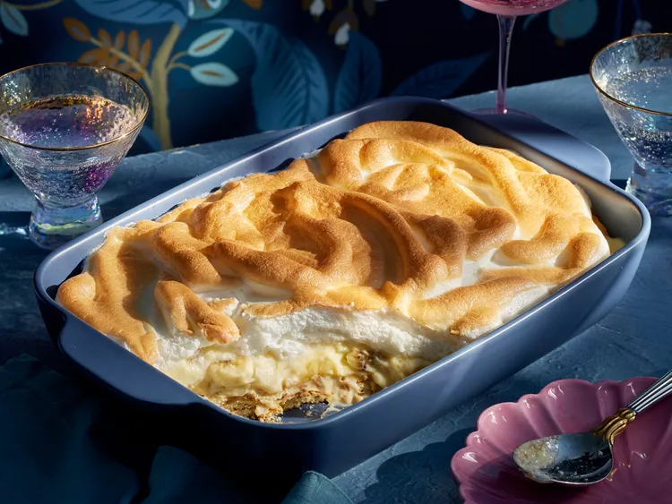

Banana Pudding

How to Make Banana Pudding
This is a recipe you remember from your childhood.
It is tasty, has few calories and it is a perfect party meal.
- Sugar
- 0,5 cup flour
- Salt
- 6 cups milk
- 6 eggs
- 0,5 cup butter
- Vanilla extract
- 9 bananas
- 2 boxes vanilla wafers
- Cream of tartar
- Stir together 1 cup sugar, the flour, and salt in a large bowl. Whisk in milk, egg yolks, and whole eggs until well combined and smooth.
- Melt butter in a large saucepan over medium heat. Pour milk mixture into saucepan with butter;
Reduce heat to medium-low and whisk constantly until the mixture has thickened, coats the back of a spoon nicely, and begins to bubble, about 20 minutes.
Remove from heat and stir in 2 teaspoons vanilla. Cover and let custard cool to room temperature, about 1 hour. (It will continue to thicken as it cools.)
- Line the bottom and sides of 2 casserole dishes with vanilla wafers. Layer banana slices over wafers. Pour cooled custard over bananas and wafers
- Beat egg whites, cream of tartar, and the remaining 1 tablespoon sugar and 1 teaspoon vanilla at high speed.
- Set oven rack about 4 inches from broiler; turn broiler to high. Quickly broil meringues until browned, about 1 to 2 minutes.
- Remove dishes from oven, allow meringue to cool slightly, about 15 minutes, and serve.